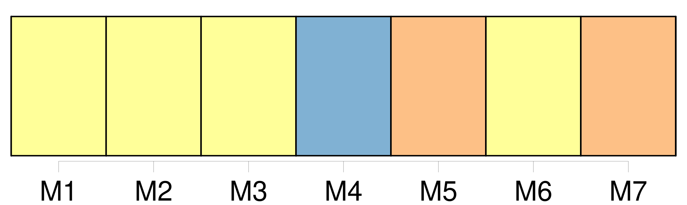
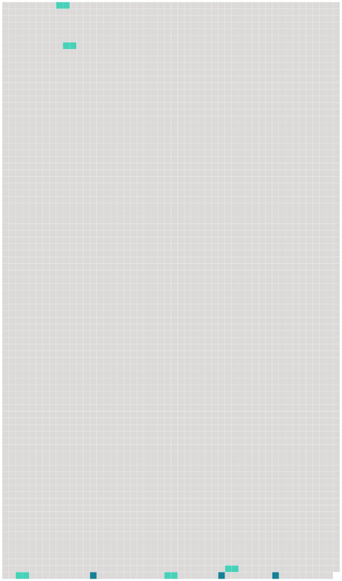

Longueur nb maillons : 8 mentions |
 |
Entre Swansea et le cap Saint Vincent, [l'Amin] coupe les eaux de l'Atlantique dans les coups de vent et les grains de la saison : derrière les vitres de la chambre des cartes on voit les paquets de mer éclater contre la roue du gouvernail, le corps de l'homme de quart, ils font sonner la cloche de timonerie. [6 phrases] Le thermomètre monte chaque jour, les soleils tournent, les jours, les nuits finissent par se fondre au sein d'une lumière terne et éclatante qui aveugle tous les yeux, [l'Amin] longe parfois des falaises rouges et jaunes coupées de rares accidents, les repères blancs d'un tombeau de saint homme, d'une maison écroulée. [140 phrases] » Quand son bateau est neuf comme [l'Amin] , Blair apprend à connaître un objet : savoir comment les pompes à mazout fonctionnent, comment [cette carcasse] obéit aux tours du gouvernail à Vapeur, comment [elle] se comporte à la lame.
Il écoute les bruits [du navire] comme un cœur, jusqu'à [le] connaître comme une femme, jusqu'à [s'] en dégoûter comme d'une vieille épouse. |
 |
Il est possible de télécharger la ressource sur la page Ortolang |
Si vous avez des questions ou vous voyez des erreurs, merci d'envoyer un mail à silvia.federzoni89@gmail.com |